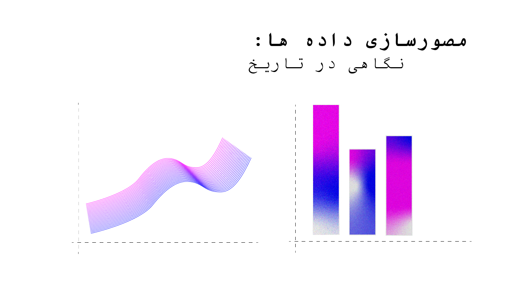

مصورسازی داده ها: نگاهی در تاریخ

تنها چیز جدید در جهان، تاریخی است که شما نمیدانید.
—Harry S Truman
مصور سازی داده شاید به نظر برسد که یک حوزه جدید و مدرن هست ولی اگر نگاهی به تاریخ این حوزه کنیم متوجه می شویم که این موضوع ریشه عمیقی در تاریخ دارد و برای همین سعی کردم که در اینجا راجع به این موضوع مطلبی به شما ارائه بدم.
این نمودارها بر اساس تاریخ دسته بندی شده اند تا بهتر بتوان از توسعه و پیشرفت نمودارها باخبر شد.
قبل از قرن هفدهم:
یکی از اولین نمودارهای سری زمانی که می شناسیم که توسط فردی ناشناس طراحی شده که محور عمودی آن نشان دهنده تمایل مدارهای سیاره ای است.
محور افقی نشان دهنده زمان است که در ۳۰ بازه تقسیم بندی شده.

سال ۱۶۰۰ تا ۱۶۹۹:
این تصویر نشان دهنده جایگاه خورشید در طول زمان است که در سال ۱۶۲۵ توسط Scheiner به وجود آمد.

از نمودارهایی که تونست تاثیر زیادی در مصورسازی بزاره توسط van Langren یک ریاضی دان و ستاره شناس هلندی ایجاد شده، این نمودار راجب محاسبه طول جغرافیایی بود را توانست در یک نمودار جمع آوری و ارایه کند همین تصمیم باعث شد که یک قدم بزرگی برای نمایش اطلاعات علمی به وسیله چارت ها برداشته بشه.

توسعه نظریه احتمال و استفاده از آن برای تجزیه و تحلیل دادههای اجتماعی و اقتصادی به تدریج و به مرور زمان شکل گرفت. این ایدهها و کاربردها در قرن 17 و 18 آغاز شد و توسعه بیشتری پیدا کرد
و در پایان قرن موارد مورد نیاز برای توسعه متدهای گرافیکی فراهم شده بود - یک سری داده واقعی و یک سری نظریه برای فهمیدن این داده ها و چند ایده برای چگونه نشون دادن اونها.
از سال ۱۷۰۰ تا ۱۷۹۹:
در قرن ۱۸ ام مصورسازی داده یک اسم و رسمی برای خودش گرفته بود و از این اطلاعاتی که در گذشته به دست آورده بودن برای ساخت و طراحی نقشه ها استفاده میشد و فقط هم قصد اونها نشون دادن اطلاعات جغرافیای نبود!
برای مثال همینطور که در این نقشه از اولین دفعاتی است که داده ها بر روی نقشه تلفیق شده است .

تایم لاین ، یک نوع دیگر از نمودارهایی که در این قرن به وجود اومد تایم لاین بود که به عنوان مثال طول زندگی ۲۰۰۰ فرد معروف از سال های ۱۲۰۰ قبل میلاد تا ۱۷۵۰ بعد از میلاد توسط Joseph Priestley به وجود اومد

و بعد از اون در چهارسال دیگه این نمودار به عنوان detailed chart of history طراحی شد.

از سال ۱۸۰۰ تا ۱۸۵۰:
در قرن ۱۹ ام میلادی، یک پیشرفت بسیار زیاد در زمینه مصورسازی داده ها به دلیل به وجود آمدن تکنیک ها و طراحی ها مختلف دچار پیشرفت خیلی زیادی شد که قبل از آن زمان میسر نبود.
در این زمان بیشتر نمودارهایی که امروز از آنها استفاده می کنیم مانند نمودار پراکنش، نمودارهای سری زمانی، نمودار میله ای ، نمودار دایره ای به وجود آمدند.
در سال ۱۸۲۱ یک نموداری سری زمانی که هزینه ها، درآمد که در ۲۵۰ سال حکومت یک پادشاه را نشان می دهد که توسط William Playfair به وجود آمد.

این نمودار و دیگر نمودارهایی که به وجود آمدند دلایل بنیادی برای نشان دادن مقادیر کمی روی نقشه بودند.
نمودار پایین نشان دهنده میزان ثبت نام مدرسه (پسران) در فرانسه را نشان می دهد. که توسط Charles Duplin طراحی شده است. این نمودار اولین بار با استفاده از درجات رنگی بین سیاه و سفید خواست که این اطلاعات کمی و پیوسته را در نقشه نشان دهد و می توان گفت که از اولین نمودارهایی است که در فضای اجتماعی استفاده شد.

در سال ۱۸۳۳ نیز یک وکیلی به نام Andr´e-Michel Guerry، یک سری داده راجب سواد، خودکشی، امر خیریه (و دیگر امور اخلاقی ) و اطلاعاتی از امور خلافی که هر سه ماه در هر منطقه رخ می داد استفاده کردند و می توان گفت که یکی از دلایل به وجود آمدن علوم اجتماعی مدرن هست:

به همین دلیل در این نقطه از زمان استفاده از نمودارها به صورت رسمی مورد استفاده قرار گرفت.
- برای نشان دادن واردات و صادرات کالاها استفاده شد.
- برای اینکه نشان دهند کجا می توانند راه آهن بسازند؟
نمودار پایین نشان دهنده حمل و نقل کالاهای تجاری در امتداد کانال دو سنتر است. ایستگاههای میانی بر اساس فاصله از جدا شده اند و هر ستون بر اساس نوع کالا تقسیم شده است، بنابراین مساحت هر کاشی نشان دهنده هزینه حمل و نقل است. فلشها جهت حمل و نقل را نشان میدهند.

در این زمان آماردان ها علاقه ای به استفاده از نمودارها نداشتند بلکه ترجیح می دادند که به اعداد به صورت خام کار کنند.
سال ۱۸۵۰ تا ۱۹۰۰: دوران طلایی استفاده از نمودارهای آماری
این دوران صفت طلایی را به خود می گیرد به دلیل اینکه جمع آوری داده ها به علاوه پیشرفت کردن در حوزه مصورسازی داده ها با هم ادغام شدند و این باعث پیشرفت بسیار عظیم شد.
با اینکه در سال های پیش تلاش برای نشان دادن دو متغیر انجام شده بود ولی در این دوران نمودارهایی را مشاهده می کنیم که به صورت سه بعدی رسم شده اند.
به عنوان مثال:

لوئیجی پروتزو توزیع سنی جمعیت سوئد را از سال ۱۷۵۰ تا ۱۸۷۵ به صورت سهبعدی نشان داد. سالهای سرشماری از چپ به راست، سن از جلو (پیر) به عقب (جوان) نشان داده شده است، و ارتفاع سطح نشان دهنده تعداد افراد در آن سن است.
به دلیل این نمودار ها و انسان هایی که آنها را ساختند ما علم های جدید داریم و می توان گفت که نمودارها بخشی جدایی ناپذیر در صنعت، هوش مصنوعی و یادگیری ماشین شده است.